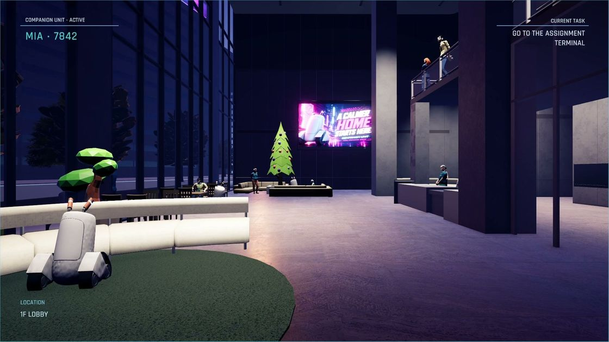
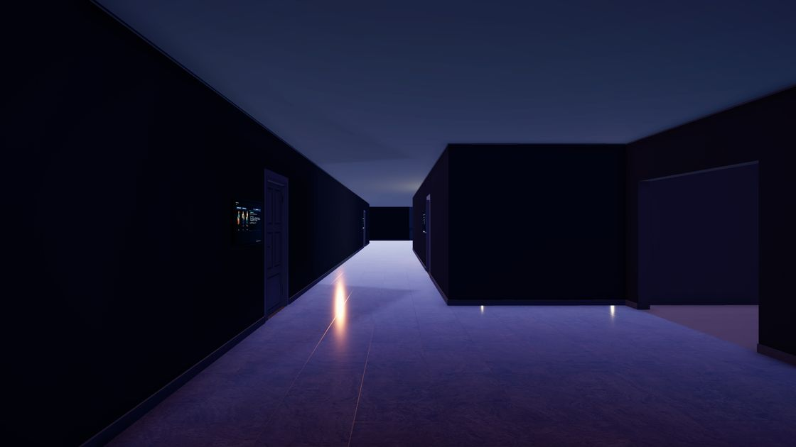
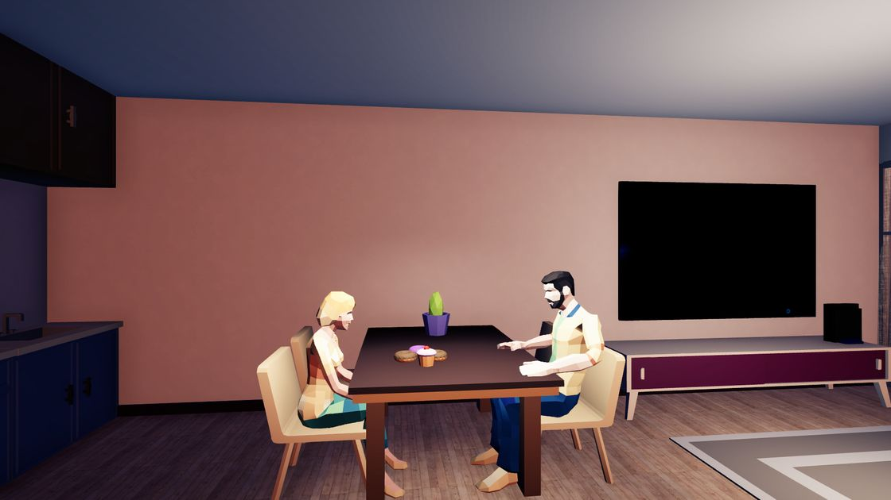

- 风格
- Stylized Realism（风格化写实）+ 企业办公空间
- 为什么像
- 一个声音平静地指引普通员工，看似周到，实际在替你做决定。这和 Field Unit 与 Mia 的关系很接近。
- 模型
- 家具都不复杂，靠吊顶、灯槽、档案柜、门牌和导视把空间撑满，很适合 AI 生成。
- 不足
- 没有家庭空间，也几乎不出现人物。
本页的对标推荐已被取代。用户后来选定了自己的 7 张参考图加 Virginia、Last Stop，现行做法见同目录的《房间视觉制作流程》。本页保留作案例和术语参考。
这版按你的反馈重做：用行业通用的风格名称，全部换成游戏的实机室内图，优先寓意类、不突出科幻感的作品。点图片看大图，点游戏名去商店页看更多。
我的建议：公共空间对标 The Stanley Parable: Ultra Deluxe 和 Superliminal，家庭室内对标 Tacoma。这三款都用 Unity 制作，都属于风格化写实，可以用同一套做法实现，也能直接用 AI 生成的带贴图模型。
上次推荐的低多边形路线需要把环境一起简化，和你说的“生成的模型直接用”有冲突，所以我换了方向。最终由你选。
风格名其实分三层，上次我把它们混在一起了。几何看面数，比如 Low Poly；着色看表面怎么画，比如 PBR、手绘贴图、卡通渲染；美术设定看世界长什么样，比如复古未来、魔幻现实。一款游戏通常是三层的组合，下面的案例都按这个方式标注。
| 上次的叫法 | 通用叫法 | 中文常用说法 | 代表作 |
|---|---|---|---|
| 风格化写实 | Stylized Realism | 风格化写实、半写实 | The Stanley Parable、Tacoma、Firewatch |
| 平面剧场 | Low Poly + Flat Shading | 低多边形、平涂 | Virginia、Kentucky Route Zero |
| 软质微缩 | Stop-motion、Claymation、Miniature | 定格风、黏土风、微缩风 | Harold Halibut |
| 图形赛璐璐 | Cel Shading、Toon Shading | 卡通渲染、三渲二 | Sable |
| 霓虹黑色 | Neon Noir、Cyberpunk | 霓虹黑色、赛博朋克 | Neo Cab、Cloudpunk |
| 洁净近未来 | Soft Sci-fi | 软科幻 | Tacoma |
| 低保真复古 | PS1-style、Retro 3D | PS1 风、低保真 | Mouthwashing、Signalis |
| 绘画化 | Painterly、Hand-painted Textures | 绘画风、手绘贴图 | Life is Strange、Disco Elysium |
| 新增 | Retrofuturism | 复古未来主义 | American Arcadia、We Happy Few |
| 新增 | Magical Realism | 魔幻现实 | What Remains of Edith Finch |
| 新增 | Liminal Space | 里空间、空旷日常空间 | The Exit 8 |


你提到家庭场景容易偏温馨杂乱，这里从整齐到杂乱都放了：Tacoma 和 Twelve Minutes 偏整齐，Life is Strange 和 Edith Finch 偏杂乱。


主题没那么贴，放在这里帮你对应风格名字。


对比后最大的差距不是贴图，而是建筑细节件。案例的墙面、吊顶和门都有结构，我们的是光面。所以这批模型的重点不只是家具。



你说项目都可以加入，但要定下来。下面是我的决定，前提是你同意上面的对标。
| 环节 | 做法 |
|---|---|
| 画面 | Stylized Realism，用 URP Lit，不做卡通着色和描边 |
| 模型 | Meshy 图生模型，带 PBR 贴图。生成时直接设面数上限（大件 15,000、中件 5,000、小件 1,500），生成后直接用，不做减面和调色板处理，也不逐件检验 |
| 角色 | 先试换 1 个：用 Meshy 重新生成并绑定，能套上现有动作就全换，不行就保留现有角色 |
| 灯光 | 切到 Forward+，烘焙间接光，每间房一个反射探针。夜晚和次晨两套光照切换 |
| 氛围 | Decal 做污渍和生活痕迹，Volumetric Light 做窗口光柱，每户一套调色 |
| 上次列的项目 | 决定 | 原因 |
|---|---|---|
| Forward+、Decal（URP 内置） | 加入 | 解决分房布光和生活痕迹 |
| Unity-URP-Volumetric-Light | 加入 | 免费，支持 2022.3，用于窗光 |
| Bakery | 建议购买 | $55，烘焙质量和速度好于内置，资料称支持 URP，到手后要实测。不买也能用 Unity 内置烘焙 |
| UnityMeshSimplifier、meshoptimizer | 暂不加入 | 生成时已限定面数，城市远景卡顿时再用 |
| Flat Kit、Unity Toon Shader、lilToon、Outlines、Kuwahara | 不加入 | 这些都用于卡通或绘画路线，风格化写实用不上 |
| UnitySSGIURP | 不加入 | 已有烘焙间接光，不需要实时反弹光 |
| TripoSR、TRELLIS.2、Hunyuan3D | 不加入 | 本机 6GB 显存，质量和速度都不如云端 |
那些天数不是算出来的，是我按人工做美术的经验给的估计，没有逐项拆分，也没有计入 AI 生成的速度，不该写得那么确定。这次改成能核对的算法：
一轮是指：生成或调整一批内容，你看一次图。按 11 个空间（大堂、走廊、电梯、17F01 两间、17F02 两间、17F03 一间、17F04 三间）、每个空间 3 轮算，一共 33 轮。你每天看 3 次约 11 天，每天看 1 次约 33 天。所以真正决定周期的是你的看图频率，模型生成本身很快。
| 数据 | 数值 | 来源 |
|---|---|---|
| 场景物件 | 258 件（大堂 43、四户 215） | 实测 |
| 单个模型生成时间 | 约 3 分钟 | 10-30 两次文生模型实测，图生模型还没测 |
| 账号余额 | 共 2,676 积分（1,354 + 1,322） | 实测 |
| 单模型积分 | 15（smart-topology 带 2K 贴图） | 价目表，还没实际扣费验证 |
| 要生成的模型 | 约 170 件 | 估算：去重后约 140 件，加约 30 件建筑细节件 |
| 每个空间 3 轮 | — | 假设，试点后用实际次数替换 |
| 烘焙时长 | 未知 | 17 层还没烘焙过，要实测 |
额度：170 件 × 15 = 2,550，角色 15 个约 300，加两成重做，共约 3,400 积分，比现有余额多约 700。先做试点不会超，全量时可能需要补一次。
试点做完后，我会用真实轮次和耗时重算全流程，再给你一个有依据的周期。
| 事项 | 你 | Claude Code | Codex |
|---|---|---|---|
| 选对标、定风格帧 | 拍板 | 整理案例和底图 | 生风格帧 |
| 工具和额度 | 购买、充值、浏览器登录账号 | 列清单，告诉你要什么 | — |
| 从 Unity 读尺寸、写提示词 | 可追加参考图 | 负责 | — |
| 单体参考图 | 可追加参考图 | 写提示词 | 负责，不扣 Meshy 积分 |
| 生成模型 | — | 直接运行 Meshy | 备用；Tripo 只能由它运行 |
| 摆放、灯光、材质、烘焙 | — | 负责 | — |
| 交互和走位回归 | 最后亲自玩一遍 | Play 模式检查 | — |
| 每个空间看图 | 看同机位成片，说要改什么 | 出图、按意见改 | — |
这里有一处更正：上次我说这个会话没有生图能力，其实 Meshy CLI 自带文生图和图生图，每次 3–12 积分，我可以直接调用。生图仍优先给 Codex，因为不扣 Meshy 积分。把建模放到 Claude Code 这边，可以省掉一次交接；这条路我只验证了登录、余额和费用预估，还没提交过真实任务。
截图全部来自 Steam 商店官方素材，由页面实时加载，没有保存副本，只作内部美术参考。如果图片显示不出来，点游戏名可以到商店页查看。